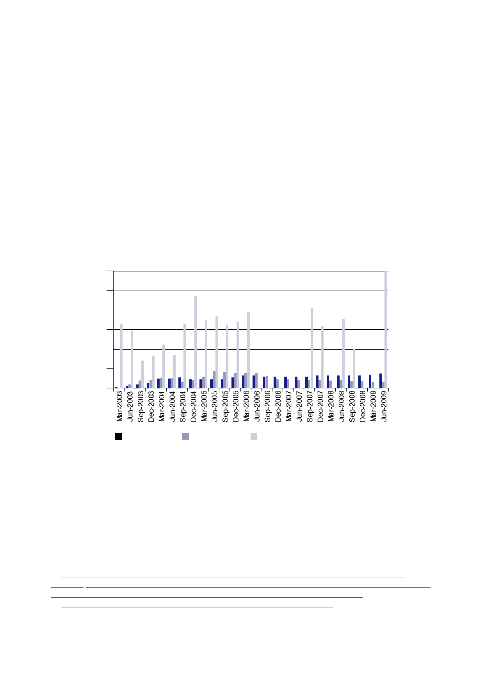

15.1 | Civilian
personnel
•
The FCO and
DFID deployed a combined average of 100 civilians
(including
DFID
contractors, but excluding police, security contractors and
officials from
other
government departments) for post‑conflict reconstruction and the
UK’s
bilateral
representation in Iraq.
•
There were
two peaks in DFID’s contribution to reconstruction:
{{53
personnel from March to June 2004, towards the end of the CPA
period;
and
{{88
personnel in June 2005.
•
The number
of DFID personnel fell significantly in the face of
deteriorating
security in
late 2006.
•
The number
of FCO staff deployed to Iraq reached 50 towards the end of
the
CPA period
and climbed to 75 in mid‑2009.
600
500
400
300
200
100
0
FCO
deployment
DFID
deployment
Civilians
deployed by MOD under Op TELIC
879.
Table 3 shows
estimates of the number of UK police officers deployed in Iraq
on
selected
dates between July 2003 and April 2009 for which data are
available.572
880.
Section 12.1
also includes data on the number of UK police officers deployed
to
train Iraqi
police at the police training facility in Jordan.
569
Letter FCO
to Iraq Inquiry, 27 May 2011, ‘Iraq Inquiry – Role of Civilians in
Iraq’ attaching Table,
[untitled];
Letter Fraser to Aldred, 22 July 2013, ‘Iraq Inquiry: Deployment of
Civilian Personnel: Statistics,
Annex B –
Iraq: FCO Staff in post on the last day of each quarter, 2003‑04 to
2009‑10’.
570
Letter
Lowcock to Aldred, 24 June 2013, [untitled] attaching Table,
[untitled].
571
Letter
Ministry of Defence to Iraq Inquiry, 31 May 2013, ‘Civilian Roles
in Iraq’.
572
This is an
edited version of Table 6 in Section 12.1. Sources are explained in
Section 12.1.
393